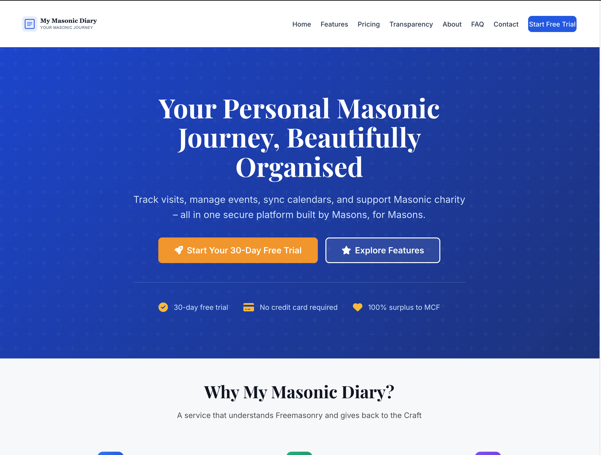

Multi-tenant SaaS,
built for
Freemasonry.
Two codebases, one product. The platform itself runs lodges, chapters, provinces, ranks, appointments, events, calendar sync, charity tracking and Stripe billing. Alongside it, the public marketing site sells the thing. Built ground-up for a vertical that didn't have a product. Whatever a subscription does, your data stays yours.

Freemasonry didn't have a product built for it.
Freemasonry has a structure most software pretends doesn't exist. Lodges, chapters, provinces, ranks, appointments. Each with their own conventions. People hold ranks, take appointments, attend each other's meetings, log charity work, and care a great deal about who can see which bit of any of that.
The off-the-shelf alternatives were a tangle of paper diaries, generic calendars, half-fitting CRMs, and forum threads. Nothing modelled the domain. Nothing handled the privacy properly. Nothing returned the surplus to the Masonic Charitable Foundation.
The brief was to build the product that should have existed. A SaaS people would actually subscribe to, with the domain modelled properly, with charity as a first-class concept, and with a public site that explains it without sounding like an enterprise vendor.
One platform. Nine jobs, properly.
Multi-tenant workspaces
Path-based and subdomain tenancy. Per-province, per-lodge isolation with seamless workspace switching for members in more than one.
- Path tenancy
- Subdomain support
- Workspace switching
Domain model
The actual structure of Freemasonry, modelled properly. Lodges, chapters, provinces, ranks, appointments, provincial officers.
- Lodges & chapters
- Provinces
- Ranks & appointments
- Provincial officers
Events & visits
Calendar entities with proper privacy modes. Members can log visits, plan appointments, and run meetings without leaking detail to the wrong audience.
- Events
- Visits
- Meetings
- Privacy modes
Calendar sync
iCal feeds with per-visibility tokens. Each member's diary appears in their own calendar app, with the right things hidden from the wrong audiences.
- iCal feeds
- Per-visibility tokens
- Reminder prefs
Subscription billing
Stripe-driven monthly and annual billing. Trial periods, cancellation flows, payment-method management, annual savings, all reconciled to the member.
- Stripe subs
- Trials
- Annual savings
- Cancellations
Your data stays yours
If a subscription lapses, nothing disappears. The workspace stays in place, fully readable, members and history intact. Resume any time and write access turns straight back on.
- Read-only on lapse
- Full history preserved
- Members & data intact
- Resume any time
Charity tracking
Charitable transactions are a first-class concept. Members log donations, the platform tracks the surplus, the surplus goes to the Masonic Charitable Foundation. Public-facing transparency reporting.
- Charitable transactions
- Gift Aid
- MCF reporting
- Surplus tracked
Checklists & reminders
Custom checklist templates per workspace. Items, deadlines, reminders driven by scheduled jobs so things actually happen on time.
- Custom templates
- Reminders
- Scheduled jobs
Communications
Queued email with templated HTML and plain-text variants. Slack webhooks for ops. SMTP integration. All async, all retried, all logged.
- Queued email
- Slack webhooks
- SMTP
- Async retries
Security & auth
Two-factor auth with backup codes. Role-based access control. Audit logging on sensitive paths. Soft deletes for compliance. Granular visibility per entity. Built to current industry discipline throughout.
- 2FA + backup codes
- RBAC
- Audit logs
- Soft deletes
- Granular visibility
A public site that sells the thing properly.
The platform needed somewhere to land. So the second codebase is the marketing site, sat alongside the SaaS in production, doing the job of explaining the product to a Masonic audience without sounding like a vendor.
Lightweight. Fast. Accessible. No tracking by default. The charity-first promise is on the homepage, the price (£2.50 a month, or £25 a year, with a 30-day trial that doesn't ask for a card) is on the pricing page, and the FAQ answers the actual questions members ask.
What "two codebases" actually looks like.
The stack, briefly.
Backend
- PHP 8.2 application
- MariaDB
- Redis caching & sessions
- Stripe SDK
- Cron-driven jobs
Platform UI
- Bootstrap 5 + custom CSS
- System dark mode
- Apple-inspired UI patterns
- Mobile-first member portal
- Print-friendly reports
Public site
- Alpine Linux container
- Nginx + PHP-FPM
- Supervisord
- Gzip, caching, lazy loading
- WCAG 2.1 AA
Services
- Stripe (subs, trials, payment methods)
- Slack webhooks for ops
- iCal feeds, tokenised
- SMTP / Mailhog
Security
- 2FA with backup codes
- Role-based access control
- Audit logs on sensitive paths
- Soft deletes for compliance
- Granular per-entity visibility
Operations
- Docker Compose
- Cron sidecars
- Redis-backed sessions
- PHP-FPM behind Nginx
- Two services in production
A product that didn't exist, now does.
This isn't a website. It isn't a CMS. It isn't a Stripe wrapper. It's a vertical SaaS shipped in seven months, with two codebases in production, a working subscription business model, and a charity-first commercial promise.
- Domain-aware product
- Subscription business model
- Charity-first pricing
- Privacy that respects the vertical
- Two codebases, both shipped
- Active feature iteration
- Marketing site converting
- Surplus going to the MCF
If you've got a niche, an audience that's been quietly underserved, and an idea for the product nobody's built yet, this is the kind of build we like most.